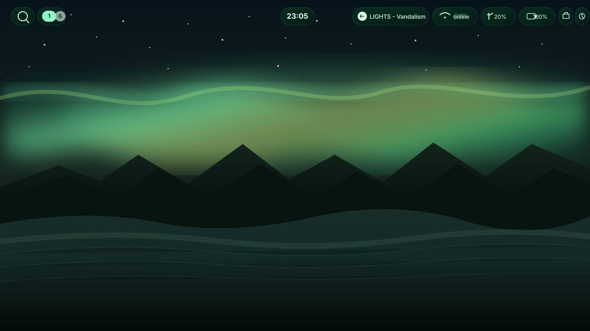

Fast
Keep the path from boot to desktop direct and responsive.
 Calypso LinuxDesigned for Greatness
Calypso LinuxDesigned for Greatness
A focused Arch-based Linux experience with KDE Plasma at the center, a future Hyprland direction, and a system designed to feel intentional from the first boot.
Calypso is built around a focused set of defaults, a coherent visual identity and room for you to make the system your own.
Keep the path from boot to desktop direct and responsive.
Start with the useful pieces instead of loading the system with noise.
Defaults, artwork and documentation share one visual language.
Follow the repository, inspect the project and see how the pieces fit.
KDE Plasma is the current main desktop. Hyprland is shown as a future design direction for the upcoming Calypso dotfiles.

A complete, familiar desktop environment with a dark emerald direction and plenty of room to customize.

A keyboard-first tiling workflow using Noctalia as the shell layer. The image shows the direction of the upcoming Calypso Hyprland dotfiles, not a released setup.
The live image uses a graphical installation flow: choose storage, create your account, apply the system and reboot.
System configuration is being applied to the target device.
Boot the installed system into the Calypso desktop and continue from there.
Calypso is organized so its pieces stay recognizable: an Arch base, Calypso-specific system decisions, and desktop layers on top.
Source, releases, wiki and community channels are part of the same public project.
Inspect the repository, grab releases, read the wiki and stay in touch with the project.

Creator · maintainer · Linux enthusiast
I'm Leon, the creator and maintainer of Calypso Linux. I'm 15, and I build Calypso as a hands-on way to learn Linux development, system configuration, web design, packaging, documentation, and the realities of maintaining a distro in public. It's grown from a personal Linux project into something much bigger, and I'm still learning with every part I build. :)
Choose your preferred mirror for the current Calypso ISO, then inspect the source on GitHub or open the wiki to understand the project.